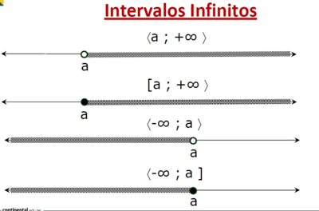

intervalos
Cálculo de intervalos en Cálculo diferencial
Un intervalo es un conjunto definido de valores que tienen orden; está acotado por un ínfimo y un supremo a los cuales se les denomina puntos extremos a y b del intervalo. Los puntos extremos de un intervalo cerrado están incluidos en él , en tanto que los puntos extremos de un intervalo abierto no están incluidos en él. Algunos autores denotan los puntos extremos de un intervalo abierto con puntos «huecos» y los extremos de un intervalo cerrado con puntos «rellenos». Existen tres maneras de representar intervalos:
Notación de intervalos.
Desigualdades.
Gráficamente.
Los símbolos \infty, infinito positivo, y - \infty, infinito negativo, no representan números reales. Simplemente son símbolos prácticos que se utilizan para describir lo ilimitado de un intervalo. Por ejemplo (1, \infty) o (-\infty, 3].
En matemáticas o en la vida real un intervalo representa el conjunto de todas las posibles soluciones que puede tener una ecuación, una desigualdad o un problema.
Video de ayuda